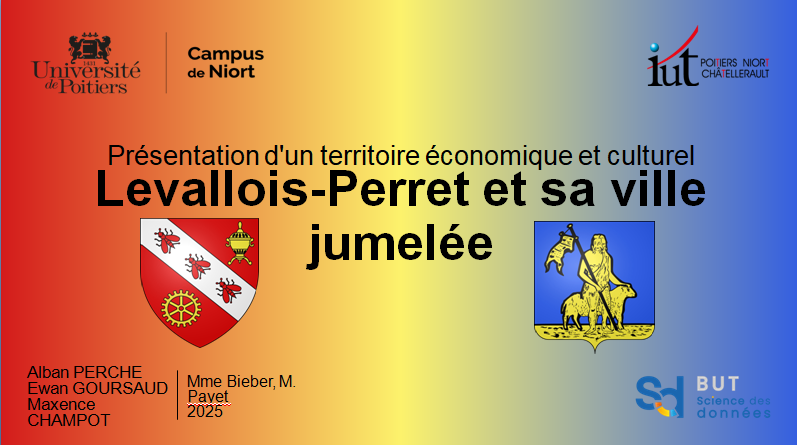

Cette SAÉ consistait, avec Maxence CHAMPOT et Alban PERCHE, à présenter une commune française de notre choix, ainsi qu'une de ses villes jumelées. Nous avions choisi la commune de Levallois-Perret et Molenbeek (commune belge) en tant que ville jumelée. Pour ce travail, nous devions présenter Levallois-Perret d'un point de vue historique et culturel, en français, et Molenbeek d'un point de vue économique, en anglais.
Pour Levallois-Perret, nous avions présenté les origines de la commune, de sa création sous la demande de Napoléon III à sa situation actuelle, en passant par les figures marquantes ayant habité ou développé leurs activités ici, ou encore l'affaire BALKANY.
Pour Molenbeek, nous avions décrit les aspects économiques de la ville et ses secteurs d'influence. Nous avions également parlé de la population de la commune ainsi que de son passé industriel.
Nous avions conclu ce travail en expliquant la situation actuelle des deux villes, assez particulière car elles ne souhaitent plus être liées l'une à l'autre : pour Molenbeek à cause de l'affaire BALKANY, pour Levallois-Perret car Molenbeek était la ville d'origine de certaines personnes ayant orchestré les attentats du 13 novembre 2015 à Paris.